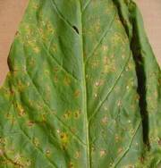
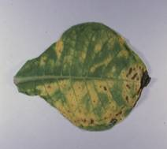
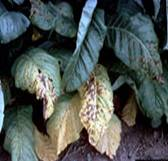
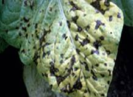

TOBACCO :: MAJOR DISEASE :: WILD FIRE
Wild fire - Pseudomonas tabaci
Symptoms
The leaf spots may occur at any stage of plant growth including the nursery seedlings. Dark brown to black spots with a yellow halo spreads quickly causing withering and drying of leaves. In advanced cases, lesions develop on the young stem tissues leading to withering and drying of the seedlings. In the fields, initially numerous water soaked black spots appear and latter become angular when restricted by the veins and veinlets.
|  |  |  |  |
Symptoms |
|||
Several spots may coalesce to cause necrotic patches on the leaves. In advanced conditions, the entire leaf is fully covered with enlarged spots with yellow haloes. The leaves slowly wither and dry. Under humid weather condition, the disease spreads very fast and covers all the leaves and the entire plant gives a blighted appearance.
Pathogen
The bacterium is a rod, motile with a single polar flagellum, non-capsulated, non spore forming and Gram negative.
Favourable Conditions
- Close planting.
- Humid wet weather.
- Strong winds.
Disaease cycle
The bacterium survives in the infected crop residues in the soil, which is the primary source of infection. The secondary spread of the pathogen in the field is through wind splashed rain water and implements.
Management
- Remove and burn the infected crop residues in the soil.
- Avoid very close planting.